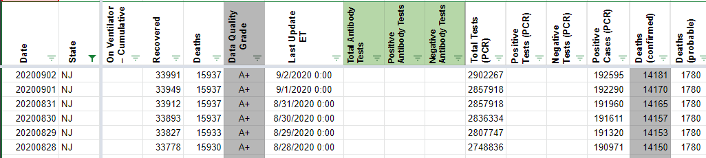
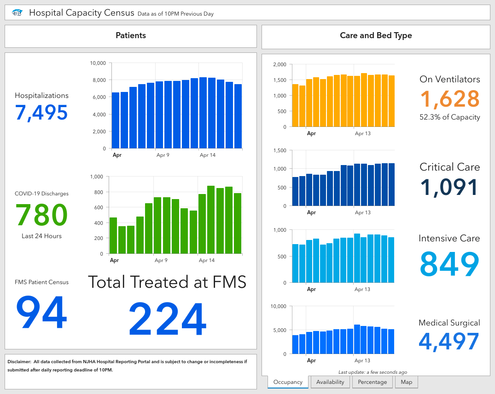

#1112: [NJ] Carry over hosp/ discharges from 4/10 - 4/27
Issue number 1112
hmhoffman opened this issue on February 25, 2021, 7:34 AM PST
State: NJ
Dates affected: 04/11/20 - 04/27/21
Describe the issue: On February 10, 2021, we captured Hospital Discharges from a New Jersey press conference. Because this is a cumulative value, we're carrying this value over until 04/28, when we found a new source for Hospital Discharges.
Comments
#1112: [NJ] Carry over hosp/ discharges from 4/10 - 4/27
Issue number 1112
hmhoffman opened this issue on February 25, 2021, 7:34 AM PST
State: NJ
Dates affected: 04/11/20 - 04/27/21
Describe the issue: On February 10, 2021, we captured Hospital Discharges from a New Jersey press conference. Because this is a cumulative value, we're carrying this value over until 04/28, when we found a new source for Hospital Discharges.
Comments
Rows edited: 17 NJ 2020-04-27 hospitalizedDischarged: 682 (was None) NJ 2020-04-26 hospitalizedDischarged: 682 (was None) NJ 2020-04-25 hospitalizedDischarged: 682 (was None) NJ 2020-04-24 hospitalizedDischarged: 682 (was None) NJ 2020-04-23 hospitalizedDischarged: 682 (was None) NJ 2020-04-22 hospitalizedDischarged: 682 (was None) NJ 2020-04-21 hospitalizedDischarged: 682 (was None) NJ 2020-04-20 hospitalizedDischarged: 682 (was None) NJ 2020-04-19 hospitalizedDischarged: 682 (was None) NJ 2020-04-18 hospitalizedDischarged: 682 (was None) NJ 2020-04-17 hospitalizedDischarged: 682 (was None) NJ 2020-04-16 hospitalizedDischarged: 682 (was None) NJ 2020-04-15 hospitalizedDischarged: 682 (was None) NJ 2020-04-14 hospitalizedDischarged: 682 (was None) NJ 2020-04-13 hospitalizedDischarged: 682 (was None) NJ 2020-04-12 hospitalizedDischarged: 682 (was None) NJ 2020-04-11 hospitalizedDischarged: 682 (was None)
#1057: [NJ] Patch 01/08 Probable Cases, and Cases (confirmed + probable)
Issue number 1057
hmhoffman opened this issue on January 9, 2021, 2:32 PM PST
State: NJ
Dates affected: 01/08
Describe the issue: On January 8, 2021 New Jersey’s Probable cases increased from 53,967 to 72,123 without explanation. This affected their Cases (confirmed + probable), which is calculated as Positive PCR tests (people) plus Probable cases in the absence of an explicit total case number. On January 9, 2021, their Probable cases decreased from 72,123 to 56,147. Because of this, we believe that the figure reported on January 8, 2021 was a mistake, and are editing the number in out timeseries. In the absence of a historical timeseries for Probable cases, we are updating Probable cases for January 8, 2021 to be 53967, the same figure reported on January 7, 2021.
Comments
Rows edited: 1 NJ 2021-01-08 positive: 570575 (was 588731) probableCases: 53967 (was 72123)
Updated the values again, using the data from "Case and Mortality Summaries" tab, and then inside the "PCR and Antigen Positives" (with value captured on 2021-01-08)
Multi-edit tool-PRODUCTION - NJ-HMH-20210109_post.csv.txt Multi-edit tool-PRODUCTION - NJ-pre-20210109.csv.txt
#1057: [NJ] Patch 01/08 Probable Cases, and Cases (confirmed + probable)
Issue number 1057
hmhoffman opened this issue on January 9, 2021, 2:32 PM PST
State: NJ
Dates affected: 01/08
Describe the issue: On January 8, 2021 New Jersey’s Probable cases increased from 53,967 to 72,123 without explanation. This affected their Cases (confirmed + probable), which is calculated as Positive PCR tests (people) plus Probable cases in the absence of an explicit total case number. On January 9, 2021, their Probable cases decreased from 72,123 to 56,147. Because of this, we believe that the figure reported on January 8, 2021 was a mistake, and are editing the number in out timeseries. In the absence of a historical timeseries for Probable cases, we are updating Probable cases for January 8, 2021 to be 53967, the same figure reported on January 7, 2021.
Comments
Rows edited: 1 NJ 2021-01-08 positive: 570575 (was 588731) probableCases: 53967 (was 72123)
Updated the values again, using the data from "Case and Mortality Summaries" tab, and then inside the "PCR and Antigen Positives" (with value captured on 2021-01-08)
Multi-edit tool-PRODUCTION - NJ-HMH-20210109_post.csv.txt Multi-edit tool-PRODUCTION - NJ-pre-20210109.csv.txt
#1045: [NJ] Probable Cases (antigen positives)
Issue number 1045
space-buzzer opened this issue on January 5, 2021, 12:41 PM PST
Labels Data quality
The state of New Jersey added ~51K probables cases, established through antigen testing. On the main dashboard (https://njhealth.maps.arcgis.com/apps/MapSeries/index.html?appid=50c2c6af93364b4da9c0bf6327c04b45&folderid=e5d6362c0f1f4f9684dc650f00741b24) there's no time series for the probables cases, only the confirmed ones. A time series is available under the "Cases and Mortality summary" tab, in the "PCR and Antigen Positives" (https://dashboards.doh.nj.gov/views/DailyConfirmedCaseSummary7_22_2020/PCRandAntigenPositives). The caveat is that probables there are reported by illness onset, which is not grate and does not match the reporting dating we for most data, but butter than adding 51K cases in a single day.
Comments
This issue has been automatically marked as stale because it has not had recent activity. It will be closed if no further activity occurs. Thank you for your contributions!
This issue has been closed because it was stale for 15 days, and there was no further activity on it for 10 days. You can feel free to re-open it if the issue is important, and label it as "not stale."
#977: [NJ] Patch transposed value in 10/18 Total PCR tests (specimens) and Negative PCR tests (people)
Issue number 977
hmhoffman opened this issue on November 25, 2020, 6:31 PM PST
State: NJ
Dates affected: 10/18
Describe the issue: On 10/18 there was a transposed value in NJ's Total PCR tests (specimens, the value was entered as 4137596, but should have been 4135796.
Comments
BEFORE:
AFTER:
#895: [NJ] Patching anomalous hospitalization values from 10/11
Issue number 895
the-daniel-lin opened this issue on October 13, 2020, 9:02 AM PDT
Labels Backfill Data quality
State or US: New Jersey
Describe the problem On 10/11, during the publication shift, NJ reported extremely low current hospitalization numbers. The values we recorded are as follows:
Currently Hospitalized - 170 (dropped from 641) Currently in ICU - 60 (dropped from 156) Currently on Ventilator - 13 (dropped from 48)
That night, NJ updated their dashboard to reflect much higher values that were more in line with their trend lines. We're backfilling these anomalously low values with the numbers sourced from their dashboard as of 9:48PM EST.
Link to data source
Values as of 9:48PM EST

https://covid19.nj.gov/#live-updates
Comments
BEFORE:
AFTER:
#883: [NJ] Weekly backfill: Probable deaths released on 10/1
Issue number 883
MattHilliard opened this issue on October 3, 2020, 7:33 AM PDT
Labels Data quality
State or US: NJ
Describe the problem As usual, NJ has updated their probable death time series this week. The data runs through Tuesday. When they do this, we replace our probable deaths column with their time series and update total deaths to be daily sum of our existing confirmed column plus the new probables.
Link to data source https://covid19.nj.gov/#live-updates
Comments
Data updated. Spreadsheet (including previous values) here: https://docs.google.com/spreadsheets/d/1HCQSdm9mpEOY3vCd3E9sBqxPoui4MB0M--DMrFxBTNU/edit#gid=1515835087
#849: [NJ] Weekly backfill: Probable deaths released on 9/15
Issue number 849
MattHilliard opened this issue on September 18, 2020, 10:16 AM PDT
Labels Data quality
State or US: NJ
Describe the problem As usual, NJ has updated their probable death time series this week. The data runs through Tuesday. When they do this, we replace our probable deaths column with their time series and update total deaths to be daily sum of our existing confirmed column plus the new probables.
Link to data source https://covid19.nj.gov/#live-updates
Comments
Data updated. Spreadsheet (including previous values) here: https://docs.google.com/spreadsheets/d/1HCQSdm9mpEOY3vCd3E9sBqxPoui4MB0M--DMrFxBTNU/edit#gid=1515835087
#819: [NJ] 9/8 update missed updating the positive cases value
Issue number 819
jaclyde opened this issue on September 8, 2020, 4:16 PM PDT
Labels Data quality Missing Data
State: NJ
Problem: Pub Shift accidentally missed updating Total Cases (api: positive).
Solution: update from Dash. screenshot
{kind=link}
Comments
BEFORE:

AFTER:

#813: [NJ] Weekly backfill: Probable deaths released on 9/3
Issue number 813
MattHilliard opened this issue on September 4, 2020, 1:05 PM PDT
Labels Data quality
State or US: NJ
Describe the problem As usual, NJ has updated their probable death time series this week. The data runs through Tuesday but was only released on Thursday (9/3). When they do this, we replace our probable deaths column with their time series and update total deaths to be daily sum of our existing confirmed column plus the new probables.
Link to data source https://covid19.nj.gov/#live-updates
Comments
This was done soon after opening, looks like I forgot to close it at the time. The spreadsheet with the old/new values is here: https://docs.google.com/spreadsheets/d/1HCQSdm9mpEOY3vCd3E9sBqxPoui4MB0M--DMrFxBTNU/edit#gid=810227789
#810: [NJ] Correct mistaken data entry of total deaths on 8/21,9/1 & 9/2
Issue number 810
muamichali opened this issue on September 3, 2020, 6:10 AM PDT
Labels Data quality
State or US: New Jersey
Describe the problem Due to confusing/wrongly entered instructions, checkers did not calculate the total deaths in NJ from the confirmed+probable, but left them as is.
Link to data source 8/31 https://covidtracking.com/screenshots/NJ/NJ-20200831-182223.png 9/1 https://covidtracking.com/screenshots/NJ/NJ-20200901-182124.png 9/2 https://covidtracking.com/screenshots/NJ/NJ-20200902-181951.png
- [x] Amend the totals on the dates in question
- [x] Change the instructions back to what they were on 8/27
Comments
BEFORE 
AFTER

Restored Data Entry Instruction in States Matrix
DC'd by DZL 9/3 10:26
#799: [NJ] 8/27 Probable deaths backfill
Issue number 799
MattHilliard opened this issue on August 28, 2020, 11:50 AM PDT
Labels Data quality
State or US: NJ
Describe the problem Every week, we backfill NJ probable deaths and recalculate its total deaths based on the state-provided time series.
Link to data source https://covid19.nj.gov/#live-updates
Comments
As is typical, probable deaths dropped, although there was a recent probable death (one on 8/18) for the first time since we started these backfills. This caused a temporary drop in total deaths on 8/26 when DE picked up the new probables number, but that's now been smoothed out.
Still using the same spreadsheet for before/after: https://docs.google.com/spreadsheets/d/1HCQSdm9mpEOY3vCd3E9sBqxPoui4MB0M--DMrFxBTNU/edit#gid=1030909519
#787: [NJ] Probable deaths backfill for 8/21
Issue number 787
MattHilliard opened this issue on August 21, 2020, 3:49 PM PDT
Labels Data quality
State or US: NJ
Describe the problem Every week, we backfill NJ probable deaths and recalculate its total deaths based on the state-provided time series.
Link to data source https://covid19.nj.gov/#live-updates
Comments
As usual, probables dipped a little bit. The weird two February probable deaths from last week have vanished (they aren't in the state's Confirmed dataset that we don't backfill either) so we're back to NJ's first death being on 3/11. For now, I'm leaving the rows in place with zeroes.
Spreadsheet updated with this week's analysis and before/after: https://docs.google.com/spreadsheets/d/1HCQSdm9mpEOY3vCd3E9sBqxPoui4MB0M--DMrFxBTNU/edit#gid=1749793441
#767: [NJ] Recoveries decrease on 8/14
Issue number 767
brianskli opened this issue on August 14, 2020, 5:32 PM PDT
Labels Historical Data
State or US: New Jersey
Describe the problem Today's recovery count results in a decrease, so the data from 8/13 should be carried forward in States Daily.
Link to data source https://services7.arcgis.com/Z0rixLlManVefxqY/arcgis/rest/services/PPE_Capacity/FeatureServer/0/query?where=survey_period%3E%3Dtimestamp+%272020-04-27+07%3A00%3A00%27+AND+structure_measure_identifier+LIKE+%27%25of+COVID+%2B+Patients+Discharged+from+Hospital+-+Excluding+Deaths+%28Past+24+hours%29%27&outStatistics=%5B%7B%27statisticType%27%3A+%27sum%27%2C+%27onStatisticField%27%3A+%27Value%27%2C+%27outStatisticFieldName%27%3A+%27recoveries%27%7D%5D
Comments
Data was confirmed to have decreased on 8/14. The 8/13 number was carried over.
Before:
After:

#766: [NJ] Probable deaths backfill for week of 8/11
Issue number 766
MattHilliard opened this issue on August 14, 2020, 1:46 PM PDT
Labels Data quality
State or US: NJ
Describe the problem Every week New Jersey releases a time series of probable deaths. Since NJ does not do daily reports of probable deaths, we decided to do a weekly backfill to make our probable deaths column match their time series starting last week (August 7).
Their dashboard's top line probable deaths number updated on Wednesday (8/12) but the time series wasn't available until Friday (8/14).
Link to data source https://covid19.nj.gov/#live-updates
Comments
This has been done:
- Probables column now matches last week's NJ probable time series
- Confirmed deaths was extended back into March based on the assumption that pre-5/3 NJ total deaths were all confirmed
- Total deaths reflects our existing confirmed + new probables
Note that we take NJ's probable death time series because we don't have a daily "dashboard time" series for it (NJ updates weekly) but we don't take their "by death date" confirmed deaths series because for now we are sticking with dashboard time data.
Analysis sheet, with old and new values: https://docs.google.com/spreadsheets/d/1HCQSdm9mpEOY3vCd3E9sBqxPoui4MB0M--DMrFxBTNU/edit#gid=263413081
#762: [NJ] SVP Fixes: Move "Total Tests PCR (People)" to "Total Tests (PCR)" from 5/11-8/16
Issue number 762
muamichali opened this issue on August 14, 2020, 8:09 AM PDT
Labels Data quality
State or US: NJ
Describe the problem ON 5/11, NJ switched the units it reports total tests in from people to tests, but CTP continued to capture the tests in the "peoplewise" column. Any values captured starting 5/11 should be moved from the "Total Tests PCR (People)" column to "Total Tests (PCR)" column
Link to data source NJ Before: (reporting in people) https://covidtracking.com/screenshots/NJ/NJ-20200508-181426.png NJ After: (reporting in tests) https://covidtracking.com/screenshots/NJ/NJ-20200511-001724.png
Comments
Updating Data Store
I am copying the following values from "Total Tests PCR (People)" column to "Total Tests (PCR)"
The screenshots reflect the top of the update portion
BEFORE
 AFTER
AFTER

Updating Future Capture Instructions

APPENDIX: Values from 5/11-8/16 2490186 2461383 2429841 2403690 2376016 2350310 2324046 2301852 2252792 2252792 2230245 2187018 2164580 2164580 2145878 2096329 2096329 2059564 2042682 1983841 1983841 1953289 1887644 1887644 1859638 1840929 1817955 1802874 1791137 1781450 1768928 1759904 1742347 1721231 1700385 1685604 1661284 1623158 1599417 1577848 1560133 1549209 1534640 1508548 1485501 1463913 1442937 1422374 1403984 1387833 1367250 1346672 1320910 1299645 1283451 1267399 1244967 1218873 1194343 1171734 1147841 1131782 1116083 1097616 1078215 1055396 1030793 1008934 989497 975089 960425 943016 918891 857729 837420 817677 795600 745308 745308 716411 685857 660325 635892 623797 603807 578735 555314 544274 531343 520182 505569 487565 475224 462972 451696 441450 433060 425933
DC'd by DZL 8/17 10:41
#718: [NJ] PCL Cases Backfill
Issue number 718
hmhoffman opened this issue on July 31, 2020, 6:15 PM PDT
Labels Backfill Historical Data not stale
Describe the Issue: CTP started reporting confirmed cases on 4/29, but we have screenshots of data to 3/21.
Data Source: https://covid19.nj.gov/#live-updates
Comments
Of use may be the "New and Cumulative Total Number of COVID-19 Cases in New Jersey" graph in the daily PDF
The NJ dashboard has cumulative confirmed cases back to March 5 "by date reported to NJDOH", which appears to correspond to what we would call "dashboard time" since they match what data entry collects once our Positive Cases (PCR) column begins. They also almost match our Positives column.
I've used those numbers to extend our Positive Cases (PCR) column from 4/29 back to 3/5.
I feel like we should also put these numbers in our Positives column since in the few places they conflict, we should go with the official state historical data. But I decided not to do that yet because the March columns for positive, negative, and Total PCR Tests (People) seem squirrelly to me. It looks like Total PCR Tests (People) was until recently a formula just adding positive and negative which seems...lame.
Analysis spreadsheet, including previous States Daily columns, is here: https://docs.google.com/spreadsheets/d/1aaKr6wLcvN4dcd8_ne2uIgYROmjKr_eJEjMya_KfUNg/edit#gid=0
#629: [NJ] Testing Numbers from 6/6-7 Need to be Updated
Issue number 629
the-daniel-lin opened this issue on July 15, 2020, 9:56 AM PDT
Labels Data quality Historical Data not stale
State or US: New Jersey
Describe the problem From an email - "I just wanted to let you guys know that New Jersey updated their testing numbers for June 6 and 7 to break them up. They reported late on the 6th, so you guys rolled their data into the 7th. But they've now changed it to 24,125 on the 5th (which you guys report as the 6th) and 17,409 on the 6th (7th for covidtracking.com).
Right now, you guys have 557 and 40,977 for those 2 days."
Link to data source
Screenshot showing CTP data:
 Screenshot from NJ site on 6/7 shows this breakdown:
Screenshot from NJ site on 6/7 shows this breakdown:

***Note: Screenshots from NJ site from 6/7-22 show a different breakdown:

However, when summing the two revised values and subtracting our current 6/6 value, we come to our current 6/7 value: 24125 + 17409 - 577 = 40977 Using these revised values for 6/6-7 follows NJ's testing trends over those few days more consistently. This is also in line with the data lag the email mentions.
Comments
This issue has been automatically marked as stale because it has not had recent activity. It will be closed if no further activity occurs. Thank you for your contributions!
BEFORE:

AFTER:
#590: NJ: Backfilling probable deaths from 6/26 & 7/8
Issue number 590
amandafrench opened this issue on July 8, 2020, 4:28 PM PDT
Labels Data quality Historical Data Missing Data not stale
State or US: [NJ]
Describe the problem NJ has twice now reported previously-determined Probable deaths. We have asked them for the data so we can backfill but have not received it yet. Placeholder issue for doing the backfill once we receive it. "On May 16, New Jersey had a significant jump in recovered (about 7,000) due to backfilling previous days after a shift in how this figure was reported on April 28. On June 25th, New Jersey reported 1854 probable deaths that occured in the past. This causes a perecived increase in the daily number of deaths." 89 new probable deaths on 7/8.
Link to data source https://covid19.nj.gov/#live-updates https://covidtracking.com/data/state/new-jersey
Comments
This issue has been automatically marked as stale because it has not had recent activity. It will be closed if no further activity occurs. Thank you for your contributions!
Found on 8/3: NJ dashboard now has a time series for their deaths separated by probable and confirmed. However, we should note that these are by 'Date of Death.' (Dash --> Top tab labeled 'Case and Mortality Summaries' --> Bottom tab labeled 'Mortality Summary')
We may be able to make an exception regarding 'date of death' for this case?
The hover-over graph looks like this:

New Jersey probable deaths have been backfilled based on the state's historical time series. Total deaths were updated to take into account the new distribution of probable deaths. This smooths out the big jumps that took place on 6/25 and 7/8 as well as the declines on 7/22 and 7/29. Confirmed deaths were not backfilled; this column remains as reported by the state each day on its dashboard.
Total deaths before/after:
Probable deaths before/after:
State data source: https://covid19.nj.gov/#live-updates Backfill spreadsheet with NJ raw data, old copy of States Daily, etc: https://docs.google.com/spreadsheets/d/1HCQSdm9mpEOY3vCd3E9sBqxPoui4MB0M--DMrFxBTNU/edit#gid=466605614
The backfill team plans to do this weekly on Wednesday, the same cadence NJ uses for updating its probable death numbers.
#540: NJ data appears to be incorrect again
Issue number 540
ffrehner opened this issue on June 25, 2020, 5:02 PM PDT
Hello. The NJ data appears to be incorrect again.
Thanks.

Comments
Hi @ffrehner
NJ has just added 1854 probable deaths to their count, but we are still awaiting the time series of when they occurred. We hope to get that information as soon as possible so we can correct the time series...
If you are following us on Twitter, we also try to explain these kinds of anomalies there.
#426: api/v1/states/current NJ deaths are way high
Issue number 426
ffrehner opened this issue on May 16, 2020, 3:46 PM PDT
The most-recent data update appears to an incorrect (high) death count for NJ...

Comments
Hi @ffrehner! It was a mistake by entry today and we have fixed it on our API. If you retrieve the data now it should be fixed. Our public spreadsheet have reflected this change
#409: NJ 5/11 Test Increase
Issue number 409
Prindle19 opened this issue on May 11, 2020, 3:26 PM PDT
Showing a single day increase in tests for NJ of 113486? That's a huge jump, is this accurate?
Comments
That’s how they reported it. We’re trying to track down precisely why they had this big backlog.
We believe it is similar to what happened in California a couple weeks ago. They changed both what they are reporting (switching to test completed instead of people tested) — and put out a huge number of tests.
We’ll let you know if we can get more clarity from the state.
A
On May 11, 2020, at 3:26 PM, Sean Wohltman notifications@github.com wrote:
Showing a single day increase in tests for NJ of 113486? That's a huge jump, is this accurate?
— You are receiving this because you are subscribed to this thread. Reply to this email directly, view it on GitHub, or unsubscribe.
Interesting, where does this data come from specifically? I don't see it on the https://covid19.nj.gov/#live-updates dashboard
I filed an OPRA request back in April to get test data by the actual day of the test (haven't heard back of course)
@Prindle19 it was on their dashboard yesterday afternoon as 425,933. Here is a screenshot we captured. https://covidtracking.com/screenshots/NJ/NJ-20200511-184534.png It is currently up to 433,060 I think that it showed up as pending on their dashboard when you asked.
Got it, yeah found that today, thank you! Also noted that now there's a note saying that this could include re-tests...wondering if that has always been the case, and whether the "confirmed cases" could represent multiple positive tests of the same patient...
Hi @Prindle19
I am closing this issue. We are watching closely all aspects related to what exactly is being reported from each state.
#305: NJ Test Increase Incorrect for 4/13/2020
Issue number 305
Prindle19 opened this issue on April 26, 2020, 11:03 AM PDT
Negativeincrease, Positiveincrease, Totalincrease for 4/13 show as:
6065 | 2734 | 2734
Total should be 6065 + 2734 = 8,799
Comments
This issue has been automatically marked as stale because it has not had recent activity. It will be closed if no further activity occurs. Thank you for your contributions!
Not stale. Still an issue.
Hi Sean,
We’re seeing "negativeIncrease":0,"positiveIncrease":2734,"totalTestResultsIncrease":2734 which matches the best data the state provided that day.
#188: NJ: Hospitalization data also available
Issue number 188
dlin opened this issue on April 12, 2020, 4:03 PM PDT
Labels stale
Apologies if this is not the right place to post this. (Please help me find the correct location.)
NJ has a hospital census hidden at the second tab of
https://maps.arcgis.com/apps/MapSeries/index.html?appid=c2efd1898e48452e83d7218329e953d7&entry=2
Screenshot taken 2020-04-12 18:56 EST. Note that data is for "10PM Previous Day"

It shows total hospatilization at 7,604 and ICU at 823, and ventilator use at 1,644.
The charts show history. Hovering over the bars, I read
| Data | ICU | Ventilator |
|---|---|---|
| 2020-04-04 | 724 | 1346 |
| 2020-04-05 | 711 | 1306 |
| 2020-04-06 | 801 | 1513 |
| 2020-04-07 | 823 | 1568 |
| 2020-04-08 | 714 | 1519 |
| 2020-04-09 | 740 | 1626 |
| 2020-04-10 | 822 | 1655 |
| 2020-04-11 | 823 | 1644 |
I can't quite make the other numbers add up to the total hospitalized.
Comments
Screenshot of just now

Recent screenshot:

Another day, another screenshot:

Another screenshot. Looks like they have some permission issues, but the numbers are still legible
Sorry I forgot to screenshot yesterday. Looks like they changed the format today or yesterday.
Screenshot just now:

Another screenshot: Values for the last few days hovering over the graph:
| Date | Hospitalizations |
|---|---|
| 2020-04-17 | 7758 |
| 2020-04-18 | 7551 |
| 2020-04-19 | 7473 |
| 2020-04-20 | 7594 |
| 2020-04-21 | 7384 |
| 2020-04-22 | 7240 |
I guess they revised the historic numbers since they don't match old screenshots.

This issue has been automatically marked as stale because it has not had recent activity. It will be closed if no further activity occurs. Thank you for your contributions!
This issue has been closed because it was stale for 15 days, and there was no further activity on it for 10 days. You can feel free to re-open it if the issue is important, and label it as "not stale."
Rows edited: 17 NJ 2020-04-27 hospitalizedDischarged: 682 (was None) NJ 2020-04-26 hospitalizedDischarged: 682 (was None) NJ 2020-04-25 hospitalizedDischarged: 682 (was None) NJ 2020-04-24 hospitalizedDischarged: 682 (was None) NJ 2020-04-23 hospitalizedDischarged: 682 (was None) NJ 2020-04-22 hospitalizedDischarged: 682 (was None) NJ 2020-04-21 hospitalizedDischarged: 682 (was None) NJ 2020-04-20 hospitalizedDischarged: 682 (was None) NJ 2020-04-19 hospitalizedDischarged: 682 (was None) NJ 2020-04-18 hospitalizedDischarged: 682 (was None) NJ 2020-04-17 hospitalizedDischarged: 682 (was None) NJ 2020-04-16 hospitalizedDischarged: 682 (was None) NJ 2020-04-15 hospitalizedDischarged: 682 (was None) NJ 2020-04-14 hospitalizedDischarged: 682 (was None) NJ 2020-04-13 hospitalizedDischarged: 682 (was None) NJ 2020-04-12 hospitalizedDischarged: 682 (was None) NJ 2020-04-11 hospitalizedDischarged: 682 (was None)